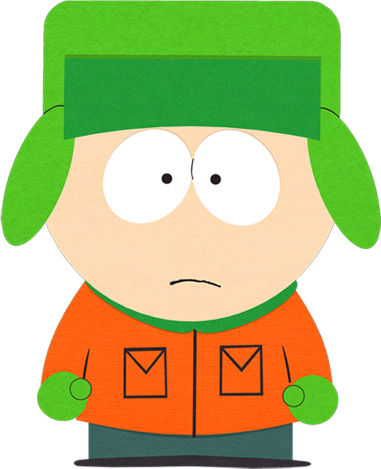

Generally
Kyle Broflovski is one of South Park's main characters, along with Stan Marsh, Eric Cartman, and Kenny McCormick. Based on co-creator Matt Stone, Kyle is a member of the only Jewish family in South Park. He is often noted for this, as well as his intelligence.
Kyle is of the Jewish faith, but this detail is not officially revealed until "Mr. Hankey, the Christmas Poo", despite having been mentioned briefly in the second The Spirit of Christmas short, and in "Big Gay Al's Big Gay Boat Ride". It was also mentioned in "An Elephant Makes Love to a Pig". Cartman regularly makes derogatory remarks about the Jewish people, often directly in Kyle's presence specifically to aggravate him.
Kyle appears to have mixed feelings toward Judaism, and there is conflicting evidence as to the religiousness of his family - for example, while they dress similarly to many religious Jews (Gerald, for example, always wears a yarmulke), they apparently do not keep the Sabbath or follow very strict sexual lives (Sheila Stone, mother of Matt Stone, was herself a secular Sephardic Jew). Kyle's apparent indifference to religion may be part of his effort to fit in with his friends, who are mostly Roman Catholic. Kyle is more often defensive than proud of his faith, and though he regularly attends such functions as "Jew Scouts", he often has a poor grasp of the history, traditions and rituals of his religion. He is very naive, though he is seen to know more in later seasons. This could be the fault of his parents, who, in a misguided attempt to shelter their son, generally do not discuss with him the finer points of their religion.
Appearance
Kyle wears a greenish lime ushanka, a bright orange jacket, dark green pants, and lime-green mittens. Kyle weighs 83 lbs. as stated in "HUMANCENTiPAD". Underneath his hat, he has red hair, much like his mother's. This was first shown in "How to Eat with Your Butt;" he is seen without his hat in "Lil' Crime Stoppers", "South Park is Gay!", "Quest for Ratings", "Mr. Garrison's Fancy New Vagina", "The Losing Edge", "Elementary School Musical", "W.T.F.", "It's a Jersey Thing", and the Coon and Friends arc (as his vigilante alter-ego, Human Kite). His hair is a nod to Matt Stone's (his creator) old hairstyle, as well as his character in "Cannibal! The Musical", who also wore an ushanka. In "Good Times with Weapons", he as depicted as a ninja with brown eyes.
In several episodes, he has appeared in different outfits other than his, such as in "Margaritaville", when Randy recommended that the townspeople wear bedsheets instead of normal clothes (and riding llamas, among other things) to propitiate the economy's anger, Kyle wore a red bed sheet in the form of a robe. Also, on several occasions, he has altered his Jewfro stylishly, as shown in "South Park is Gay!" (when he briefly followed the metrosexual fad), "Quest for Ratings" (in an exaggerated anchorman coif), "Elementary School Musical (in the style of Corbin Bleu), and in "It's a Jersey Thing" (when he 'transforms' into a Jerseyite). In "Free Willzyx", a photo-realistic image of him is drawn by the police (along with the other boys); his mother Sheila comments that it is "kind of a bad drawing".
In "The List", Kyle was voted the ugliest boy in class out of the 16 students attending the class. This shakes Kyle's confidence; he stoops down to the level of the ugly misfit kids at school (who are so ugly that he still stands out), who constantly talk about burning the school down. Eventually, Stan and Wendy informed Kyle that the list was the result of a corrupt compromise just before Kyle set the school on fire, relieving Kyle of his status as ugliest kid.
Personality
Originally, Kyle's personality was extremely similar to his best friend Stan's - he had firm morals and generally was the "good boy" of the group, often being the one to deliver the "I learned something today" speech at the end of the episodes. After the abandoned plan to kill Kyle off in Season Five (that honor went, predictably, to Kenny) his personality was changed - most notably, his temper shortened considerably. Like his mother, Kyle does speeches to say what he thinks is right,
Kyle has extremely strong beliefs, and when forced to question them, he becomes very upset and has somewhat of a short temper (especially when it comes to Cartman. This is has caused a lot of fights between the two boys). For the most part, Kyle bases his decisions on both his emotions and beliefs; therefore, he is easily coaxed into fights or manipulated by his feelings, an example of this being when Cartman sang a song about his mother being a "bitch" and got everyone to join in, which annoyed Kyle. As a result, this has happened at least twice (South Park: Bigger, Longer & Uncut, "Mr. Hankey, the Christmas Poo"). Cartman is more than happy to poke fun at Kyle in other ways as well, which has landed him in trouble many times. However, Kyle has been known to abandon his beliefs if there is a lot of money in it for him and self-justify himself despite knowing how wrong he is- he only changes his mind when he realizes he is turning into Cartman ("Crack Baby Athletic Association" and "Raising the Bar"). Out of all the major characters, Kyle seems to have the greatest moral standing, often refusing to go along with acts he finds wrong or evil, though he is easily pressured into going through on them by his friends.
Kyle seems to have a strong fraternal instinct. Despite his initial displeasure after learning that Ike was his adopted brother in "Ike's Wee Wee", he recalls his bond with Ike prior and protects him when misconceiving that Ike was in immediate danger. Kyle has, in numerous episodes, dedicated all of his focus on saving Ike or Ike's general well-being. ("It's Christmas in Canada", "Miss Teacher Bangs a Boy", "Canada on Strike", "Fatbeard", and "Dead Celebrities") In the "The Jeffersons", he was initially the first one to show concern for the new neighbor's son by promptly tending to Blanket's scraped knee when he was unnoticed by his father "Mr. Jefferson". Throughout the episode, Kyle willingly looks out for Blanket: caring for his wound, taking him to Stan's house after showing outrage that Blanket was found alone in his backyard, putting him to bed, trying to hide him from his neglectful father, and defending him by delivering that Mr.Jefferson should be more responsible for Blanket's well-being and should act as more a father figure.
Despite his short temper, Kyle has a wide imagination and is easily the most compassionate of the boys, evident by how he did not find the invasive gossip from Eavesdropper to be amusing unlike the majority of the other kids in his class. He shows genuine empathy by reasoning that others would not find the site to be funny if it wrote about them ("Bass to Mouth"). Though, Kyle can also be mean and sometimes neurotic. He also is known to be the most sensible and intelligent of the four and even though he sometimes puts his own emotions before common sense, he usually manages to find logical solutions to problems - solutions which are often ignored in favor of something ridiculous (Cartman's "psychic abilities", for example - although Kyle did manage to offer his solution through his own equally fraudulent "psychic abilities" ("Cartman's Incredible Gift")). This is yet another thing that annoys Kyle.
After PC Principal overheard that Kyle did not have a glowing opinion of Caitlyn Jenner, he was harassed until he was forced to compromise. This ultimately lost him a lot of respect, as seen by the death glares he receives whenever he tries to make one of his speeches.
Talents:
According to Mr. Garrison, Kyle is a "smart" and "A+" student. Also Kyle, along with the other boys, is portrayed as having multiple useful and trivial talents. However, at very rare times, like most of the children, he is also portrayed as being ignorant.
Video Gaming
Kyle is often seen playing video games with Stan, Kenny and Cartman, and owns an Xbox. In "Guitar Queer-O", the boys compliment Kyle and Stan's skill on Guitar Hero 123, and later in the episode, they pass the million point mark together in co-op mode - a feat that was thought to be practically impossible. In "Whale Whores", Kyle is shown playing guitar or bass in Rock Band for the song Poker Face.
Music
In "Hooked on Monkey Phonics" Kyle plays the guitar to serenade home-schooled Rebecca, who responds by throwing him money. He also performs with the boy band Fingerbang in "Something You Can Do with Your Finger". And accompanied Stan in their attempt at reaching one million points in co-op mode on Guitar Hero, in "Guitar Queer-O". And is seen performing a musical number in "Elementary School Musical". He also played bass in the boys' band Moop. He does not appear to have much sense of rhythm in terms of dancing however, as in "Rainforest Shmainforest"; he kept messing up every time the group performed (although in 'Elementary School Musical' this was contradicted by the fact the main boys performed a long and complicated dance routine perfectly). Kyle also shouts after Robert Smith in "Mecha-Streisand" that "Disintegration is the best album ever!"
Computer Skills
Kyle is shown to have relatively strong computer skills, as shown in "The Snuke" wherein he uses various public resources to thwart a terrorist threat from a Soviet-style militant. In the film, he initiates research on the clitoris and accidentally stumbling on pornography featuring Liane Cartman. When arrested by the Japanese government for ecoterrorism in "Whale Whores" Stan enlists the help of Kyle (who remained in South Park) to manipulate an image showing a dolphin and whale in the Enola Gay to a cow and chicken. Kyle is also shown to be active on social media websites such as Facebook and using popular electronic devices such as Apple's iPad in "HUMANCENTiPAD". During the events of "Bass to Mouth", he solved the mystery of who was behind the Eavesdropper website scandal by tracking the IP address within the school. He is considered to have the best technological skills out of his entire class.
Writing and Poetry
Kyle occasionally phrases what he says in a somewhat poetic way when he speaks philosophically, questioning reality and why things are as they are. In "Roger Ebert Should Lay off the Fatty Foods" Mr. Garrison begins to explain haiku's (a form of poetry) to the class, but stops on noticing Cartman was not in the classroom. Kyle shortly after comes up with three haiku's on the spot which are all used to insult Cartman. Also, in "The Wacky Molestation Adventure" Kyle is informed that Cartman had three extra tickets on the 28th row at the Raging Pussies concert, but Kyle's mom tells him he cannot go to see it unless he has done all his chores and brought democracy to Cuba (assuming it to be an impossible task). This prompts Kyle to write a letter to Fidel Castro, who is actually convinced to bring democracy to Cuba after reading Kyle's innocent, persuasive rhymes, lyrics, and words. Kyle also seems to take a leading role in writing the book The Tale of Scrotie McBoogerballs with the other boys in "The Tale of Scrotie McBoogerballs".
Sport
Kyle has played a numerous amount of sports including Basketball, Football, Baseball, Soccer, Hockey, and Dodgeball. He is very talented athletically. Kyle is known to be the best basketball player at South Park Elementary, one of two sports at which Stan is not the best (the other being Dodgeball, at which Pip is considered the best). However, in "Mr. Garrison's Fancy New Vagina", he goes to the all-state game tryouts and is rejected not because of his skills, but because of the fact that he is short and Jewish (rather than tall and black). Oddly, Kyle was not in the basketball team in "Elementary School Musical", though this was probably to avoid Kyle being active in the fad. Kyle has stated that he wants to play in the Denver Nuggets someday. On the football team however, he is very talented. He made a touchdown, which remarked his skills. He played as a Guard in Basketball, a Wide Receiver in Football, and Second Base in Baseball.